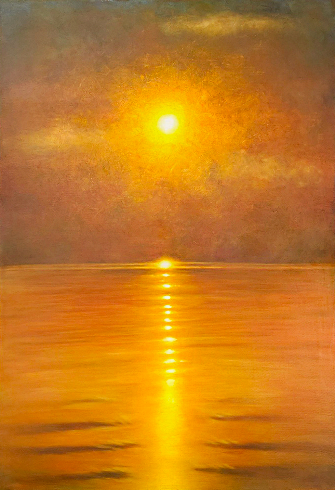

RECOVERY TIME
2024.10
Oil on canvas
116.8x80.3cm

내가 보는 풍경을 개인적인 시각으로 재구성하고자 했다.
이 작업은 사진을 편집하듯, 장면을 나의 감정과 해석으로 재편집하는 과정이다.
특히 일몰은 나에게 내면을 돌아보고 새로운 다짐을 하게 만드는 특별한 순간이다.
새해의 일몰을 보며 지나온 길을 되돌아보고 다가올 날들을 향해 다시 마음을 다잡게 된다.
이 작품에서 태양빛은 구름 사이로 조각처럼 드리워지며,
지평선에 비치는 빛은 마치 목표를 상징하는 듯하다.
또한 바다는 마치 돌다리처럼 빛의 길이 이어지는 느낌을 주며,
주변을 따뜻하게 물들이는 주황빛 색감으로 태양과 환경이 조화되는 분위기를 표현하고자 했다.